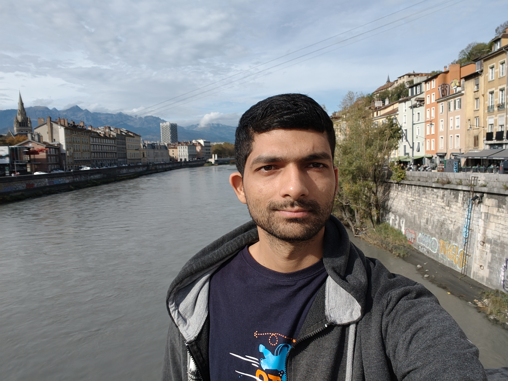

About
Hello! I am a first year Ph.D. student at the INRIA Center of the University of Grenoble-Alpes (UGA) in Grenoble, France. My Ph.D. topic focuses on with estimating the correct hand pose for grasping (and then potentially manipulating) objects in a given scene. Prior to this, I completed my bachelor's and master's at IIIT Hyderabad, India. My master's thesis explored the topic of 3D Human Pose, Shape, and Correspondence estimation.
Outside work, my time is typically spent on thinking about exercise (quite high), actually exercising (much lower), listening to music, cooking (a recent development), and re-designing an existing workflow or thing (like this website) which I don't like.
Publications
Enhanced Spatio-Temporal Context for Temporally Consistent Robust 3D Human Motion Recovery from Monocular Videos
Sushovan Chanda, Amogh Tiwari, Lokender Tiwari, Amogh Tiwari, and Avinash Sharma, Brojeshwar Bhowmick, Hrishav Barua
Arxiv, 2024
[pdf]
ConVol-E: Continuous Volumetric Embeddings for Human-Centric Dense Correspondence Estimation
Amogh Tiwari, Pranav Manu, Nakul Rathore, Astitva Srivastava
5th Image Matching Workshop at the IEEE/CVF Conference on Computer Vision and Pattern Recognition (CVPRw), 2023
[pdf]
Ground then Navigate: Language-guided Navigation in Dynamic Scenes
Kanishk Jain, Varun Chhangani, Amogh Tiwari, K. Madhava Krishna, Vineet Gandhi
IEEE International Conference on Robotics and Automation (ICRA), 2023
[pdf]
More Details: Google Scholar